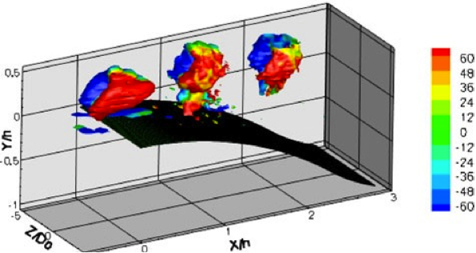
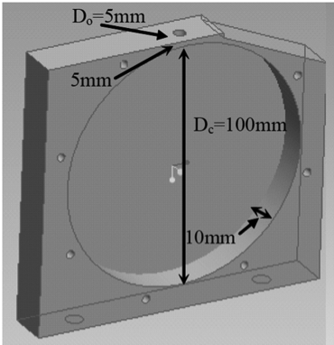

Public Access (formerly Langley Research Center)Turbulence Modeling Resource |
Exp: Round Synthetic Jets for Separation Control on 2-D Curved Backward-Facing Step
Return to: Data from Experiments - Intro Page
Return to: Turbulence Modeling Resource Home PageThe data on this page were provided by
Dr. Shanying Zhang and
Dr. Shan Zhong.
These experimental data are for turbulent boundary layer
separation control over a 2-D ramp using round synthetic jet actuators, causing delayed flow
separation. The data were taken in the Boundary Layer Wind Tunnel (BLWT) at the University of
Manchester. Several different operating conditions were measured using stereo particle image
velocimetry (PIV) and three-component laser Doppler anemometry (LDA). Detailed experimentation
set-up can be found in:
These experimental data were produced in a joint research program between the University of
Manchester and Imperial College, with Imperial College producing the LES results, as described on
the LES: 2-D Curved Backward-Facing Step
page (the LES is provided only for the baseline case without flow control),
and Manchester providing the physical measurements described here.


Some relevant information is given here, but the
interested reader is referred to the above publications for complete details:
The geometry file describing ramp down session is here:
Ramp-down Definition.
The geometry of the round synthetic jet is as follows:
Three-component velocity data has been
collected using the LDA system. These measurements were made at 16 streamwise locations
on the central plane for the following three cases:
Description of the LDA data files (modified on July 21, 2020):
Note that all vertical components (V and v) were measured in the negative vertical direction (-Y).
Therefore, all V and v components are negative of what they should be.
Return to: Data from Experiments - Intro Page
Recent significant updates:
07/21/2020 - corrected the description of the LDA data files
06/10/2020 - added link to corresponding LES data; also changed page title to match with LES page better
Page Curators: Christopher Rumsey,
Ethan Vogel,
Clark Pederson
Last Updated: 11/04/2021